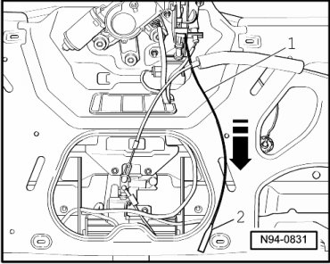

Rear Window Emergency Release
Rear Window Opener
Rear Window Emergency Release
If vehicle voltage supply is disrupted or Rear Window Opening Button (E361) is malfunctioning, rear window can be opened by operating the emergency release.

- Remove the lower rear lid trim.
- Disengage release cable - 1 - out of locking mechanism - 2 -.
- Pull release cable - 1 - in - direction of arrow -.